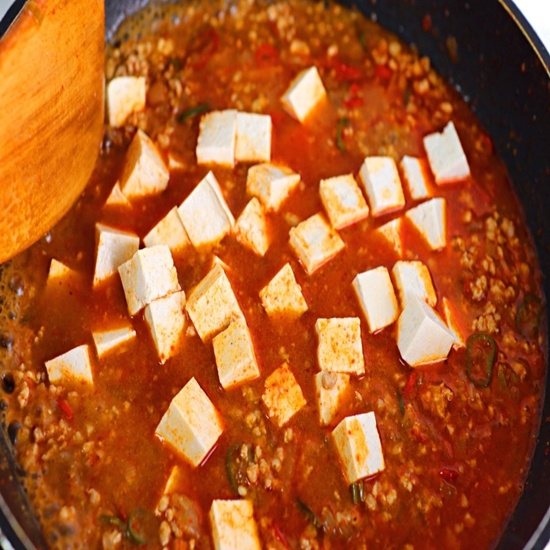

Chinese Food


재료 리스트
두부 1모 | 대파 1/2대 | 양파 1개 | 홍고추 2개 | 청고추 1개 | 돼지고기 다짐육 500g | 설탕 | 간장 | 두반장 | 굴소스 | 고춧가루 | 전분
레시피
1. 준비된 팬에 기름을 넉넉히 둘러준 뒤 다진 마늘과 잘게 다진 대파를 넣고 파기름을 만들어 준 뒤
노르스름 해질 쯤 고춧가루 1숟가락가 양파를 넣고 볶아주세요.
2. 돼지 고기 다짐육과 진간장 한스푼, 두반장 세 스푼을 넣은 뒤 고기가 익을 때 까지 볶아주세요.
그 뒤 잘라놓은 홍고추와 청고추를 넣고 마저 볶아 주세요.

3. 굴소스 세 스푼, 고춧가루 세 스푼과 설탕 한 스푼으로 간을 맞춰준 뒤
물 400ml와 두부를 넣고 끓여주세요
4. 재료가 끓는 다면 전분을 조금씩 넣어 원하는 농도까지 맞춘 뒤 참기름을 두르고 접시에 옮겨 담아주세요

마파 두부 완성 !!